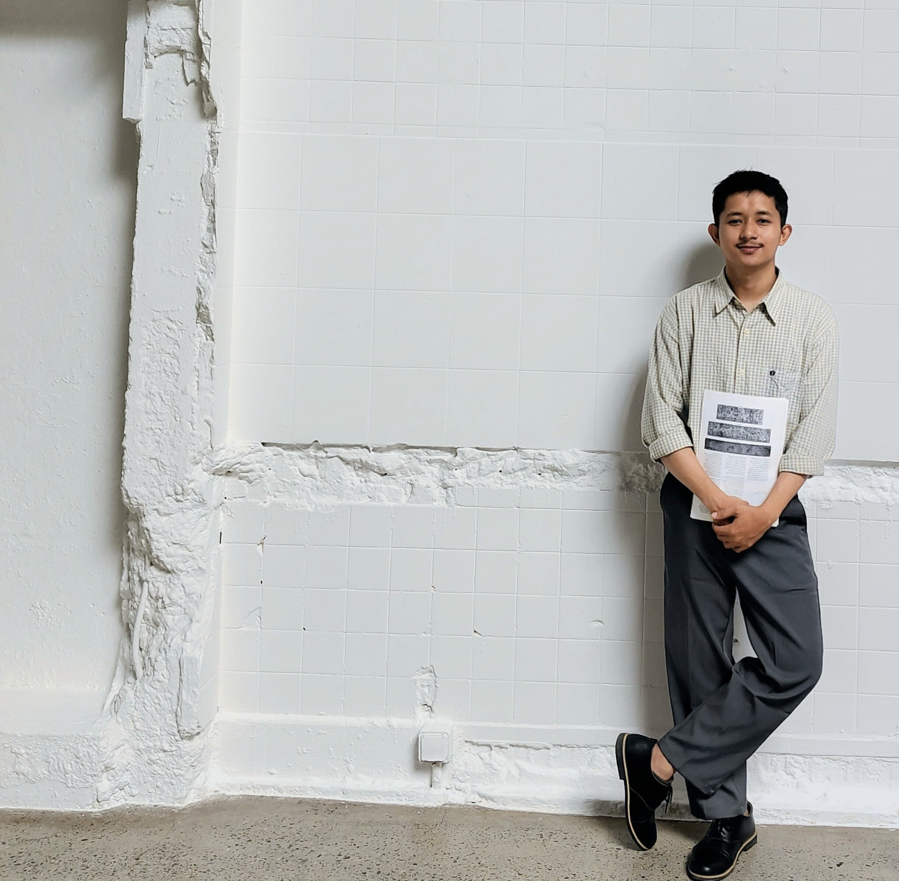
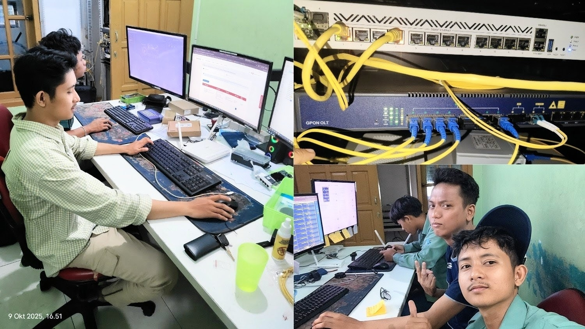
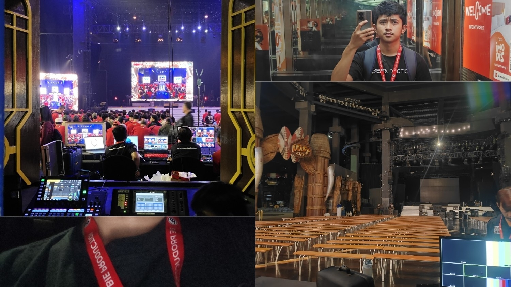

Intro

I am a highly adaptable and detail-oriented professional with a diverse background spanning operations management, technical support, and logistical execution. I specialize in optimizing workflows, managing critical resources, and solving complex real-time problems under tight schedules.
With a proven track record of handling independent business operations, high-volume fast-paced warehouse fulfillment, and dynamic on-site event logistics, I bring a versatile skill set that thrives in multi-disciplinary environments. My focus is always on efficiency, accuracy, and team collaboration.
Work
Founder & Operations Management
ALFI.NET
2022 - Present

Established and managed an independent local service venture from the ground up, handling both the business operations and customer satisfaction framework.
Key Responsibilities:
- Managed day-to-day business infrastructure, asset allocation, and capacity planning.
- Maintained physical utility distribution lines and handled end-user hardware provisioning.
- Delivered immediate crisis-management and direct troubleshooting to maintain high service availability for clients.
Operations & Client Support Intern
PT Air Lintas Komunikasi
2025

Supported infrastructure monitoring and high-stakes B2B client relations within an enterprise operational environment.
Key Responsibilities:
- Conducted real-time operational monitoring to ensure consistent system uptime and stability.
- Analyzed performance logs to preemptively identify process inefficiencies or drops in quality.
- Managed critical customer inquiries, resolved urgent operational complaints, and coordinated escalation workflows with specialized internal teams.
Production Crew — Logistical Support
PT Bie Multi Kreasi
Event-Based Project

Contributed to high-profile corporate event production, ensuring backstage synergy and absolute resource availability for the core execution team.
Key Responsibilities:
- Managed, cross-checked, and archived comprehensive technical equipment inventory and material lists.
- Coordinated logistics distribution and vital supply lines for on-site crew members under dynamic, fast-changing timelines.
- Assisted field managers to ensure seamless operational continuity throughout the live project.
Logistics & Fulfillment Operations
PT Ritel Bersama (JD.ID)
Daily Worker

Executed time-sensitive, high-volume supply chain fulfillment actions, maintaining flawless accuracy and safety standards within a massive logistical network.
Key Responsibilities:
- Picker: Maintained high accuracy in scanning, locating, and retrieving physical inventory matching systemic demand lists.
- Packer: Standardized product safety by securely packaging goods, inspecting conditions, and ensuring zero discrepancy in final dispatches.
- Sorter: Structured supply flow by zoning, classifying, and routing outbound freight based on logistical hubs and deadlines.
About

Bina Sarana Informatika University
Bachelor of Information Systems / Information Technology
Equipped with an academic background specializing in systems architecture, data-driven frameworks, and analytical process mapping. My studies focused heavily on structuring complex project requirements and using *Business Intelligence* concepts to model operational efficiency.
This education trains me to break down systemic issues, think critically, and leverage structured data to optimize administrative and physical operational workflows in any organizational structure.
Contact
Let's connect for operational management roles, logistics coordination, project collaborations, or cross-functional team opportunities: